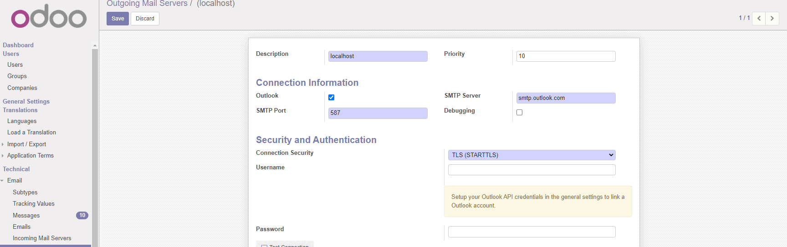

Microsoft Outlook Outgoing email server

Server di posta in uscita Microsoft Outlook



This module adds the Outlook365 support for outgoing mail servers. It is the backport from Odoo 12.0 module.

Questo modulo fornisce il supporto per gestire un server e-mail in uscita Outlook365. Il modulo è un backport da Odoo 12.0.


Create a new application
To get started, go to Microsoft’s Azure Portal. Log in with the Microsoft Outlook Office 365 account if there is one, otherwise log in with the personal Microsoft account. A user with administrative access to the Azure Settings will need to connect and perform the following configuration. Next, navigate to the section labeled Manage Microsoft Entra ID (formally Azure Active Directory).
Now, click on Add (+), located in the top menu, and then select App registration. On the Register an application screen, rename the Name to Odoo or something recognizable. Under the Supported account types section select Accounts in any organizational directory (Any Microsoft Entra ID directory - Multitenant) and personal Microsoft accounts (e.g. Skype, Xbox).
Under the Redirect URL section, select Web as the platform, and then input "https://<odoo base url>/microsoft_outlook/confirm" in the URL field. The Odoo base URL is the canonical domain at which your Odoo instance can be reached in the URL field.
Assign users and groups.
Create credentials. Create "Client ID" and "Client secret" for successfully use into Odoo.
Setup in Odoo
Settings » General Setting » Email
Set the alias domain to right value.
Load "Client ID" and "Client secret" created in Outlook365.
Activate the flag "Use external authentication provider"
Settings » Activate the developer mode
Settings » Technical » Emails » Outgoing Mail Server
To connect a Outlook365 mail server, set tha flag Outlook, check the smtp.server: this module set smtp.outlook.com, however smtp server should be smtp.office365.com. Port should be 587 and security should be "TLS (StartTLS)". Set the user name but the password must be clean.
Save configuration than click on the right arrow to Connect your Outlook account.
A new window from Microsoft opens to complete the authorization process. Select the appropriate email address that is being configured in Odoo.
Find mode info Setup Odoo in Microsoft Azure Portal

Configurazione » Impostazioni generali » Email
Caricare "Client ID" e "Client secret" ricevuti da Outlook365.
Configurazione » Attivare la modalità sviluppatore
Configurazione » Funzioni tecniche » Email » Server di posta in uscita
Per connettere un server Outlook365 attivare l'indicatore Outlook.


if you have some trouble using this module, execute the following steps:

Authors | Autori:
Contributors | Partecipanti:
This module is maintained by the SHS_AV s.r.l..
This module is part of l10n-italy-supplemental project.
Published information on | Informazioni pubblicate: 2024-05-29